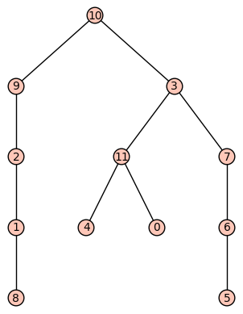

This is the final lesson of the semester! First of all, give yourself a well-deserved pat on the back for getting almost to the end of the course.
Our last concept we'll study is the notion of a binary tree which has major importance in computer science. A binary tree is just a regular tree in which all of the internal vertices have 2 children or less. Binary trees are immensely useful in all sorts of algorithms and applications, and we will be looking at some of these now. The most important application is the notion of a traversal of a tree, which refers to ways of visiting the vertices in a tree one by one to obtain a list of those vertices in a particular order. We'll look at three ways to traverse a tree (inorder, preorder, and postorder) and then apply those traversal methods to binary search trees and expression trees.
Basic objectives: Each student is responsible for gaining proficiency with each of these tasks prior to engaging in class discussions, through the use of the learning resources (below) and through the working of exercises (also below). Note that important new terminology is given in italics.
Advanced objectives: The following objectives are the subject of class discussion and further work; they should be mastered by each student during and following class discussions.
Reading: Read Section 10.4 of your textbook up to but not including the section on "Counting Binary Trees". Note that there is an typo in Example 10.4.2 – the third traversal result is for postorder, not preorder traversal.
Also read the helpful Wikipedia article on tree traversal, which includes picture examples.
Also try this animation of binary tree traversals (requires Java).
Video:
The following exercises are to be done during and following your reading and viewing of the resources. Work these out on paper and then enter the responses into the appropriate submission form (see Submission Instructions) by the deadline. You will receive a mark of Pass if each item response shows a good-faith effort to be right and is submitted prior to the deadline.
The exercises below refer to this tree:

Submit your responses using the form at this link: http://bit.ly/1lnhyFo